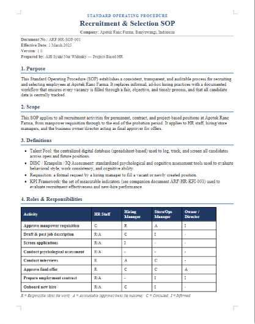

Doc No.ARF-HR-SOP-001
ClientApotek Ranc Farma
PeriodJan–Mar 2025
StatusClosed · Live

Recruitment SOP redesign lifts applicant interest 30%
ProblemNo talent-pool system, and low applicant interest, made it hard to screen candidates objectively.
SolutionWrote the company's first recruitment SOP, refreshed job descriptions, and built a digital talent pool of 100+ applicants.
ImpactApplicant interest up 30% within a month; 50+ candidates screened faster and fully documented.